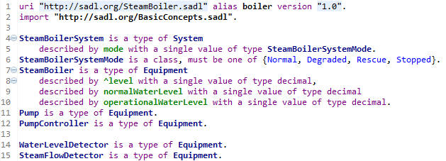
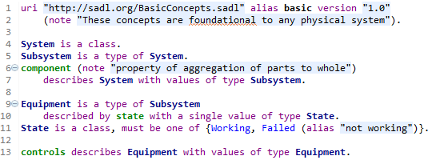
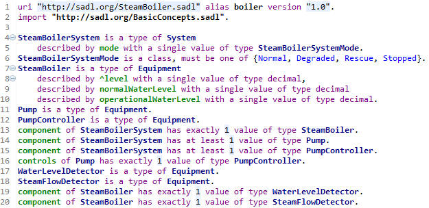
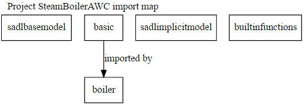
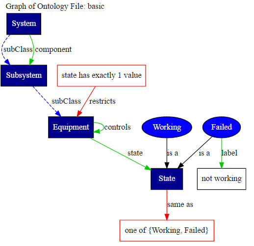

The Web Ontology Language (OWL) is a recommendation of the W3C. It supports all the foundational concept identified above.
To provide a grounding example, we take the challenge problem of a steam boiler system. Following are some classes that begin to define a formal model of this domain.
Note that this model has a URI identifier given on line 1 as well as the prefix boiler, referred to as “alias”. As noted above in the discussion of XML namespaces, all of the concepts defined in this model are in this namespace. So, for example, the full identifier of SteamBoilerSystem is http://sadl.org/SteamBoiler.sadl#SteamBoilerSystem. In any context which has the same prefix to namespace URI mapping, it can also be referred to by the qualified name boiler:SteamBoilerSystem.
Note that on line 4 SteamBoilerSystem is declared to be a sub-class of System. System is defined in the basic model which is imported on line 2. This model is shown below.

The parenthetical “note” on lines 2 and 6 are SADL’s way of adding the owl:AnnotationProperty rdfs:comment to a concept, the overall model in line 2 and the component property in line 6. Observe also that Failed is given an “alias” on line 11. This translates in the OWL to the annotation property rdfs:label. Any concept being defined may be given as many “notes” and “aliases” as desired. Note that the alias (rdfs:label) cannot be directly used instead of the concept name, but it can be retrieved by queries and other constructs by explicitly identifying that the rdfs:label of the concept is to be used.
As can be seen in the example above, the SADL IDE uses different colors and fonts for different kinds of model concepts. Class names are dark blue bold, individuals are light blue, object and data type properties are green bold. While there is no enforcement, OWL modeling convention is to use upper case starting letters for class and individual names and to use lower case starting letters for property names.
There are two ways of defining a class. One way is to specify all the individuals that belong to the class. In other words, the class is the specified set of members and there are no other members of the class. For example,
Season
is a class, can only be one of {Spring, Summer, Fall, Winter}.
Obviously, this approach will not work in many cases as the members cannot be enumerated. The other way to define a class is to specify the properties and possibly the property values that members of the class must have or not have. Axioms in the model that do this are called property restrictions. There are several types of property restrictions.

The property restrictions introduced in the previous section allow a model builder to specify necessary conditions for an individual to be a member of a class. It is possible to express a stronger axiom stating that a set of conditions is not only necessary for an individual to be a member of a class, but they are sufficient conditions, meaning that if the conditions are met the individual can be inferred to be a member of the class. While in logic one might expect necessary and sufficient conditions to be expressed as “if and only if”, in SADL the expression is just “only if”. In terms of propositional logic, for the propositions p and q, we have the following:
1. p → q (read p implies q, example: [X is a member of class Man] implies [X has property gender with value Male], a has value restriction)
2. p ↔q (read p if and only if q, example: [X is a member of class Parent] if and only if [X has at least one value of child property], a minimum cardinality restriction)
**** Examples, discussion ****
The possible ranges of an OWL data type property are the set of XML Schema Definition (XSD) data types and their derivatives. The SADL keywords corresponding to the XSD data types are the following.
anyURI double gYearMonth nonPositiveInteger base64Binary duration hexBinary positiveInteger boolean float int string byte gDay integer time date gMonth long unsignedByte dateTime gMonthDay negativeInteger unsignedInt decimal gYear nonNegativeInteger
The most common use of these XSD data types is in specifying the range of an OWL data type property.
describes PhysicalThing with values of type decimal.age
But what if we would like to have a more restricted range? Say decimal number greater than or equal to 12 and less than 18 as a property restriction of age on the Adolescent class? We accomplish this with user-defined data types. A user-defined data type is like a subclass of an XSD data type or of a union of XSD data types. The SADL grammar is like sub-classing except that the restriction is expressed as facets. The general syntax is as follows.
<user-defined-datatype-name> is a type of <xsd-data-type(s)> <facets>
Here are some examples.
adolescentAge is a type of decimal [12.0, 18.0). // decimal number >= 12 and < 18
clothingSize is a type of {int or string}. // either an int or a string
enumeratedHeight is a type of string {"short", "medium", "tall"}. // enumeration of 3 possible string values for height
SSN is a type of string "[0-9]{3}-[0-9]{2}-[0-9]{4}". // here the facet is a regular expression that matches valid Social Security Numbers
year is a type of int length 4 .
airportIdent is a type of string length 1-4 .
Once a user-defined data type has been defined, it can be used as a property range or in a property restriction.
age of Adolescent only has values of type adolescentAge.
Note that user-defined data types are blue like classes but not bold. User-defined data types are translated to RDFS Datatypes in the OWL model.
Models created or edited in SADL are saved in multiple formats. The actual SADL model is saved in a text format as a .sadl file and is normally opened in the SADL Xtext editor, which provides semantic coloring, hyperlinking, etc. This model file is sequential in nature and lends itself well to comparison between versions. It should be placed under version control. In addition, if the model is valid so that it can be translated to OWL, the file is saved as an OWL file in the OwlModels folder. The OWL file is used by the model processors to do semantic tasks such as validation of imported models. The OWL model should not be edited as it is frequently regenerated from the .sadl file. The base filename of the OWL file is the base file name of the .sadl file. The exact syntax of the OWL file, and therefore the file extension, is controlled by a preference and can be any one of
.owl – RDF/XML or RDF/XML-ABREV format
.ntriple – N-Triple format
.n3 – N3 format
SADL 3 has some built-in concepts that are deemed to be widely useful, which will be elaborated in SADL Constructs Useful in Building Models. Rather than having to explicitly import the models for these concepts, the models are imported into SADL models implicitly. Some of these implicit models are present as OWL models automatically created in the OwlModels folder. These models have content that a modeler would not normally need to see to use the built-in concept. Others models are automatically created as .sadl files placed in a project folder named ImplicitModel. It is anticipated that modelers will want to be able to easily view and in some cases even edit the content of these implicit models.
The SADL 3 implicit models, with folder identified, are as follows.
The project’s Temp folder can be used for various purposes. One subfolder of potential interest is the ErrorDocs folder which contains the file SadlErrors.html. This file contains a table of all the SADL IDE errors along with their descriptions. Derivative grammars may also provide their own error tables and other output.
Another subfolder is Logs, in which metrics reports are placed. Metrics reports capture information about the project as a whole.
All elements of an OWL model can be expressed as a statement with a subject, a predicate, and an object or value. Such a statement is called a triple. Such a statement also constitutes one segment of a directed graph: node->edge->node. Since an OWL model is a collection of such statements, it is also a mathematical directed graph. This means that graph-theoretic methodologies can be applied to OWL models. An example is the use of graph query languages such as SPARQL to retrieve information from an OWL model.
Such a model can also be visualized as a graph. Two kinds of ontology graphs can be generated in the SADL IDE. One can create a graph of an entire ontology file. This is done by selecting a .sadl or .owl file in the Eclipse Project Explorer and activating “Graph Ontology” on the SADL menu. The default visualizer uses GraphViz and generates .svg files. To enable the default GraphViz visualizer, download and install GraphViz. Then set the environment variable GRAPHVIZPATH to the absolute file system location of the installed GraphViz "bin" directory. If the .svg graphics file extension is associated with a browser, the generated file will be opened automatically. Subject to browser support, .svg graphic files may be searched by text matching, making it much easier to find nodes and edges in the graph.
Alternatively, one can select the project and “Graph Ontology” command will create a graph (.svg file) of each of the .sadl and independent .owl files in the Eclipse project and also generate a graph of the project's imports of one model by another. In that case, it is this imports graph which will be opened automatically if the .svg file association exists. In either case, each external reference in a graph is a link to the .svg file containing the resource, which can be opened in the browser by clicking on the node. Graphing our steam boiler project as an example, here is the imports graph.

Note that namespace prefixes are used to label nodes in the graph. The only explicit import is that of the basic model by the boiler model. Each node in the graph is a hyperlink to the graph of that model. Clicking on basic displays its graph.

Likewise, clicking on boiler displays its graph.
The Graphs subfolder of a project contains all of the graph files that have been generated. These files are given names indicative of their content and can be opened directly. Note that the contents of the folder may need to be refreshed before all results are visible in Eclipse. Note also that SADL models with errors will not generate OWL files and therefore will not generate graphs as the graph is a rendition of the OWL file model.